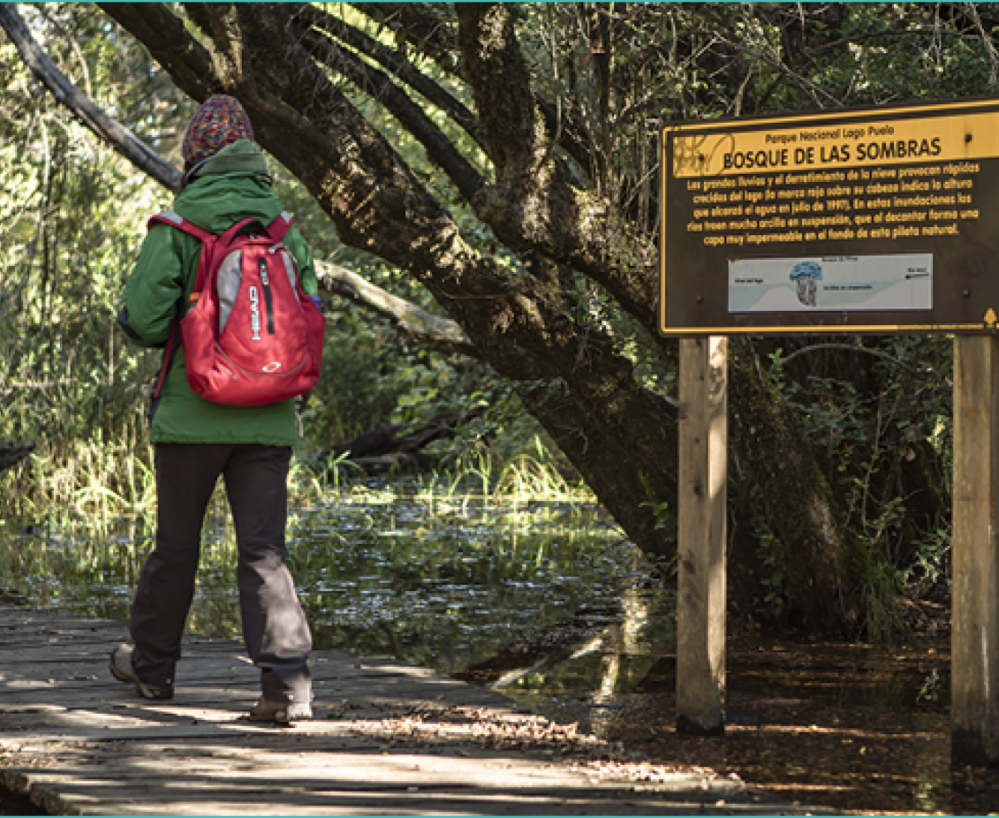
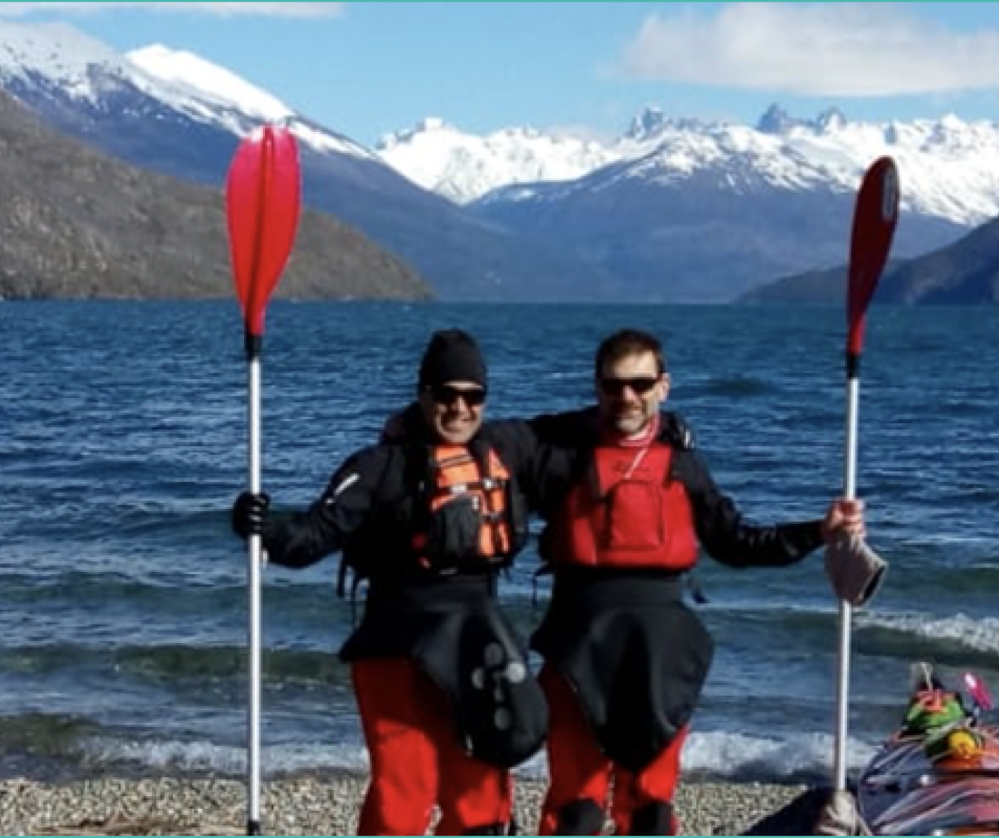
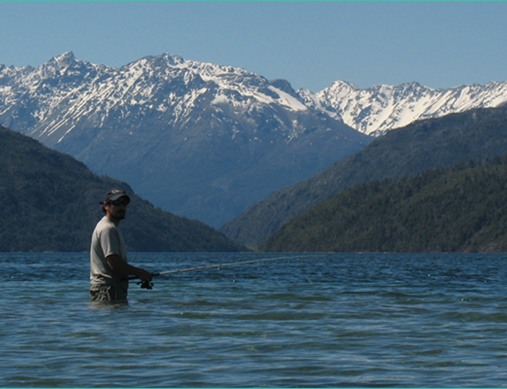
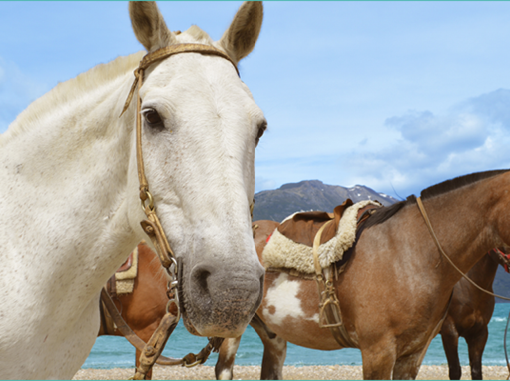
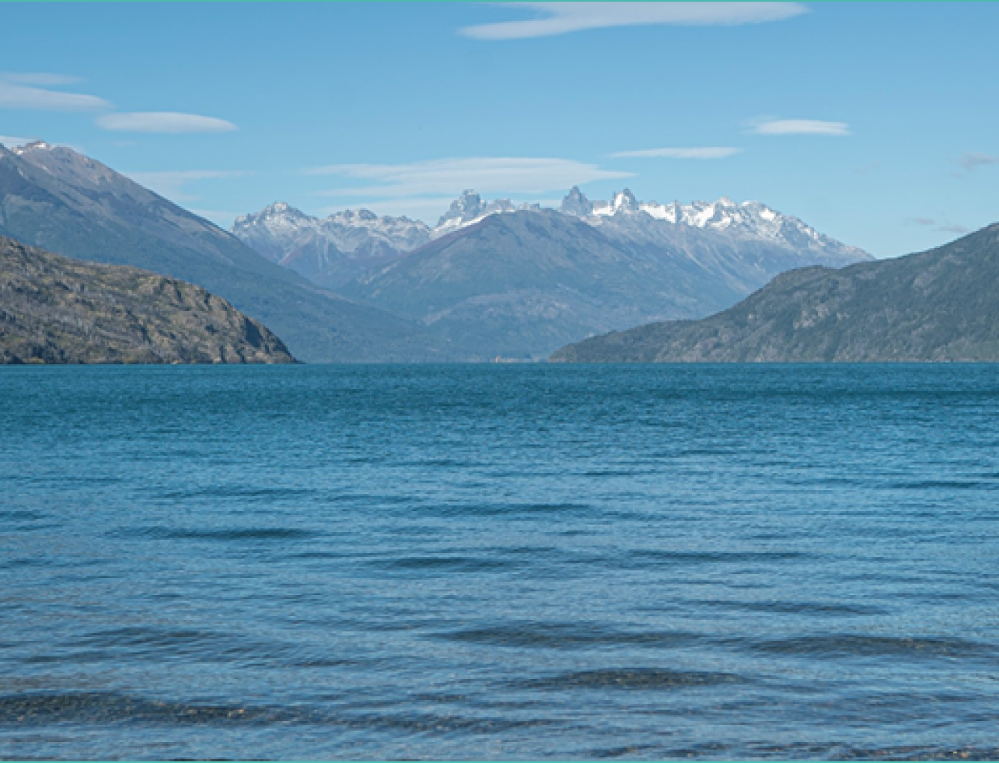

<html lang="en"></html>
<head>
    <link rel="preconnect" href="https://fonts.googleapis.com">
    <link rel="preconnect" href="https://fonts.gstatic.com" crossorigin>
    <link href="https://fonts.googleapis.com/css2?family=SUSE:wght@100..800&family=Varela+Round&display=swap" rel="stylesheet">
    <link rel="logo" href="../assets/imagenes/iconos/logo2.png">
    <meta charset="UTF-8">
    <meta name="viewport" content="width=device-width, initial-scale=1.0">
    <title>Document</title>
    <link rel="stylesheet" href="../css/actTuristicas.css">
</head>
<body>
    <header>

        <div id="contMenu">
            <div id="contLogo">
                
            </div>
            <nav>
                <ul>
                    <li><a href="../index.html">Inicio</a></li>
                    <li><a href="">Secciones</a>
                        <ul>
                            <li><a href="../paginas/faunaYflora.html">Fauna y Flora</a></li>
                            <li><a href="#contUbi">Ubicación</a></li>

                        </ul>
                    </li>
                    
                    <li><a href="">Contactos</a></li>
                    <li><a href="">Ingresar</a></li>
                </ul>
            </nav>
        </div>
    </header>
        


        <div class="container">
            <h1 class="titulo">Senderismo y trekking</h1>
            <div class="contImg">
                
            </div>
            
            <div class="info">
                <p>Existen rutas para todos los niveles: desde circuitos principiantes, que requieren escasa preparación física, hasta aquellos expertos que atraviesan rutas sinuosas con distintos grados de dificultad.
                Los senderos de media y alta dificultad requieren que los visitantes se informen previamente en el puesto de control localizado en la portada de ingreso al Parque Nacional.</p>
            </div>
        </div>

        <div class="container">
            <h1 class="titulo">Kayak</h1>
            <div class="contImg">
                
            </div>
            <div class="info">
                <p>Si buscás pasar un hermoso día con amistades o pareja, las travesías en kayak son una alternativa perfecta. Como el parque no cuenta con alquiler de kayaks, quienes quieran llevar el suyo deben registrarse previamente -sin excepción- en el destacamento de Prefectura Nacional ubicado en el puerto.</p>
            </div>
        </div>

  


        <div class="container">
            <h1 class="titulo">Pesca deportiva</h1>
            <div class="contImg">
                
            </div>
            <div class="info">
                <p>Del 1° de noviembre al 1° de mayo inclusive de cada año los lagos y ríos de la zona están habilitados para recibir a quienes gozan de esta actividad concienciada con el medio ambiente.
                En el Parque Nacional Lago Puelo la pesca está reglamentada. </p>
             </div>
         </div>
            


        <div class="container">
            <h1 class="titulo">Cabalgatas</h1>
            <div class="contImg">
                
            </div>
            <div class="info">
                <p>La manera ideal para descubrir los senderos cordilleranos entre bosques nativos de ciprés y coihue, vadeando ríos y arroyos y recorriendo la costa del lago color turquesa. </p>
            </div>
        </div>


    

   

        <div class="container">
            <h1 class="titulo">Playa</h1>
            <div class="contImg">
                
            </div>
            <div class="info">
                <p>De acceso gratuito, La Playita es el único espacio habilitado para actividades balnearias.
                Está en la cabecera norte del Lago Puelo y es una de las pocas playas arenosas de la región. Cuenta con guardavidas.</p>
            </div>
        </div>


    

</body>
</html>